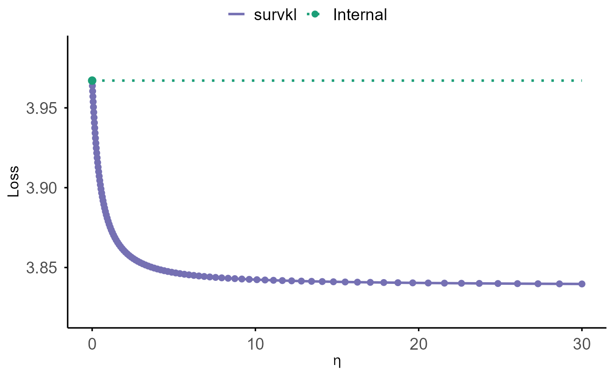
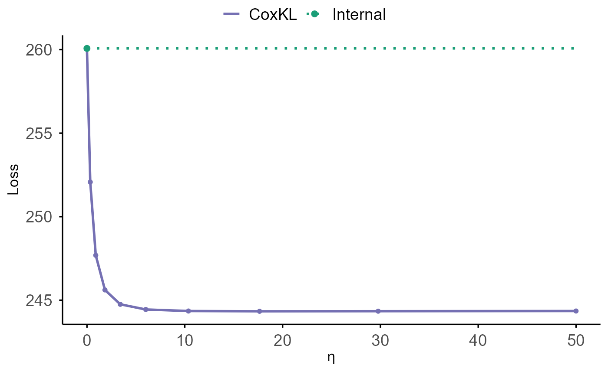
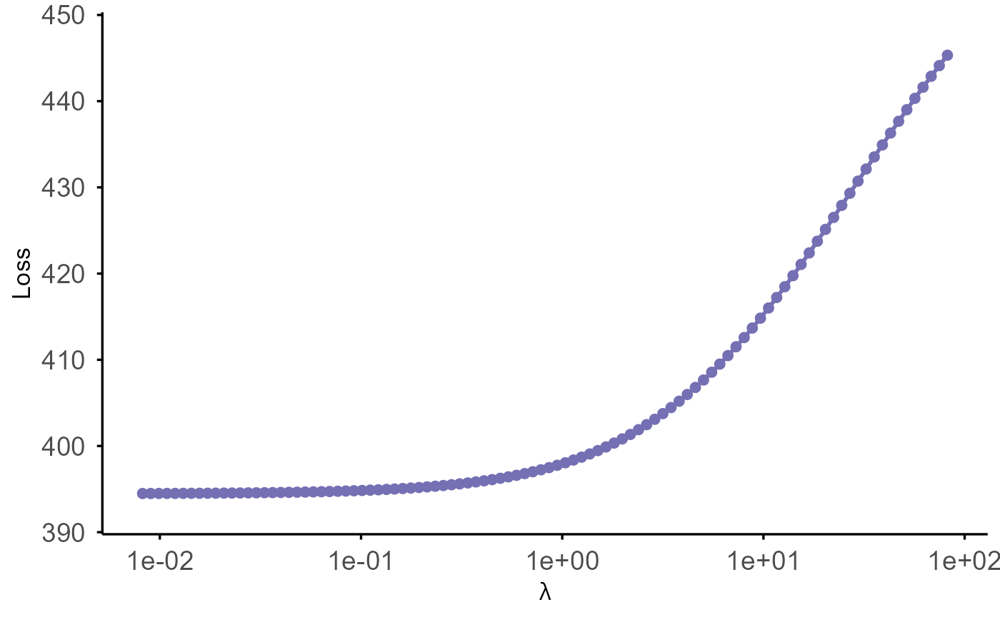
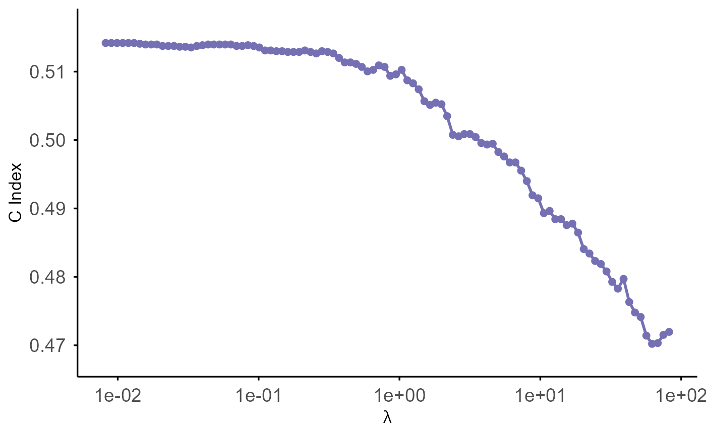
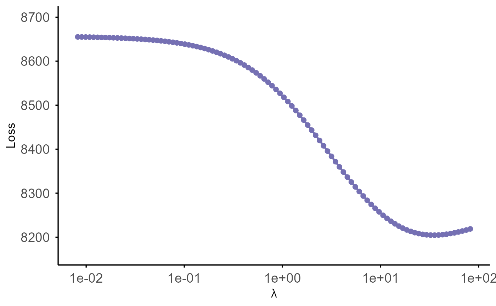
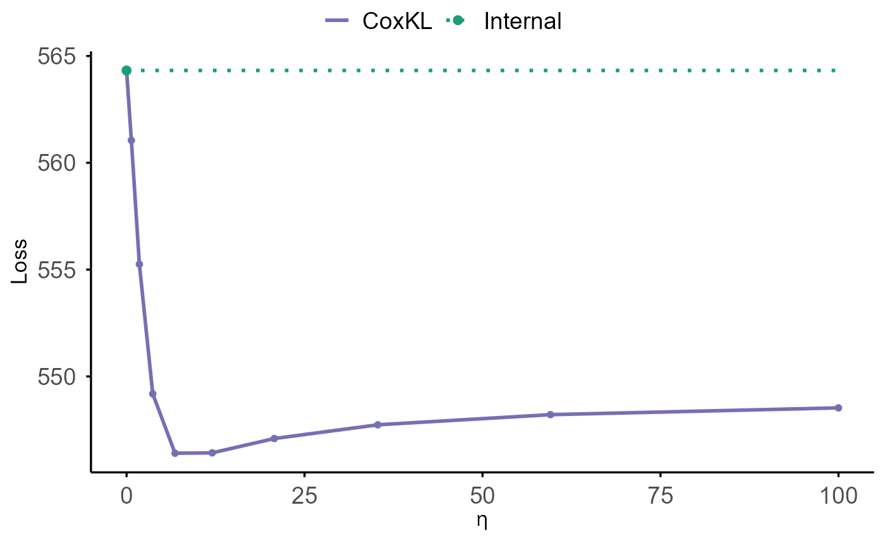
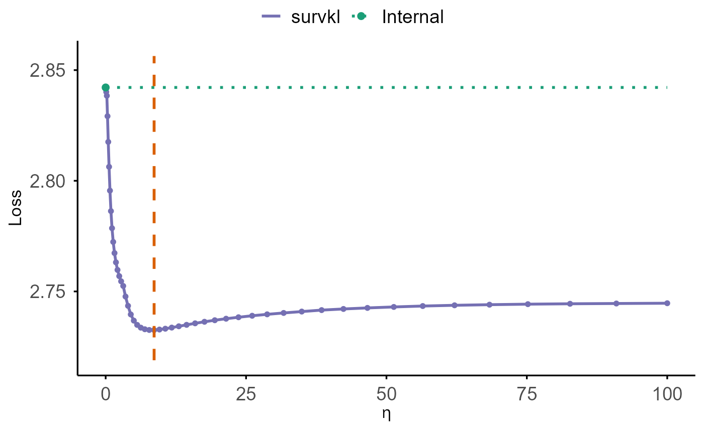
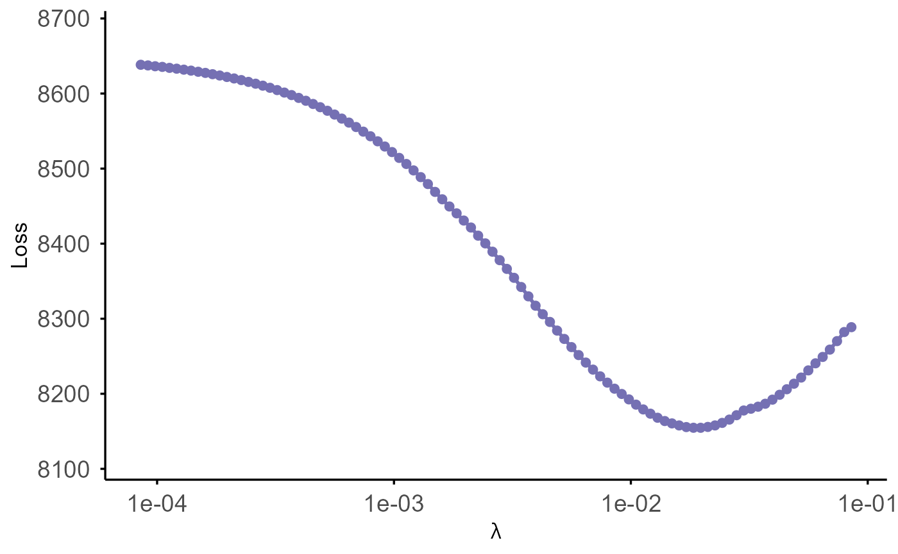

survkl: Transfer-Learning Based Integrated Cox Models
survkl.RmdIntroduction
Accurate prognosis prediction plays a central role in survival analysis. The recent growth of large-scale biobank studies—characterized by extensive genetic, transcriptomic, imaging, and electronic health record data—has created new opportunities to enhance prediction accuracy. However, despite their potential, these datasets often suffer from limited effective sample sizes, high dimensionality, low signal-to-noise ratios, and practical constraints such as patient privacy.
Integrating external information is a promising strategy for improving model performance, yet classical data integration methods typically assume homogeneous data-generating mechanisms across sources. This assumption rarely holds in modern biomedical applications. Ignoring heterogeneity can introduce substantial bias, underscoring the need for transfer-learning approaches that explicitly account for discrepancies across populations.
While KL divergence has been used previously for integrating binary-outcome models, extending such ideas to censored time-to-event outcomes is nontrivial due to censoring and the limited nature of available external survival information (e.g., predicted risk scores or sets of coefficients without a baseline hazard).
The survkl package addresses these challenges by
offering a transfer-learning framework for Cox models that integrates
external information with newly collected survival data. It is designed
to be flexible, privacy-preserving, and effective across both low- and
high-dimensional settings. Key features include:
Key Features
Transfer Learning with KL Integration:
Incorporates various types of external information via KL-based penalization to adaptively borrow strength.Privacy-Preserving External Use:
Requires only summary-level external inputs—such as risk scores or coefficient estimates—without access to individual-level external data.Robustness to Heterogeneity:
Explicitly accounts for population differences through adaptive weighting controlled by tuning parameters (eta), enabling selective borrowing from compatible sources.-
High-Dimensional Modeling Support:
Implements regularized KL-integrated Cox models, including- Ridge (
coxkl_ridge)
- Elastic Net (
coxkl_enet, including LASSO as a special case)
- Ridge (
Flexible External Information Formats:
Supports external coefficients, risk scores, and partially overlapping predictor sets.-
Comprehensive Cross-Validation Framework:
Provides multiple tuning criteria including-
Two based on C-index
- Two based on Loss: predicted deviance and V&VH loss.
-
Two based on C-index
This vignette introduces the main functionalities of
survkl and provides examples for both low- and
high-dimensional modeling workflows.
Installation
You can install from CRAN:
install.packages("survkl")Or install the development version of survkl from
GitHub:
require(devtools)
require(remotes)
remotes::install_github("UM-KevinHe/survkl", ref = "main")Quick Start
This section provides a brief overview of the main functions using example datasets included in the package.
First, load the package:
Low-Dimensional Integration
The low-dimensional KL-integrated Cox model, implemented in
coxkl, is designed for settings where the number of
predictors is modest. The method incorporates external
information—either in the form of external Cox coefficients
(beta) or pre-computed external risk scores
(RS)—using a KL-based penalization. The tuning parameter
eta governs the degree of borrowing:
- eta = 0 reproduces the standard Cox model;
- larger eta values increasingly pull the fitted
coefficients toward the external information.
In this section we demonstrate how to fit a KL-integrated Cox model
and how to select the optimal eta using cross-validation
via cv.coxkl.
Example data structure
We illustrate the workflow using the built-in low-dimensional simulated dataset:
data(ExampleData_lowdim)
train <- ExampleData_lowdim$train
z <- train$z
delta <- train$status
time <- train$time
strat <- train$stratumand externally derived coefficients beta_external:
beta_ext <- ExampleData_lowdim$beta_external_goodWe generate a sequence of eta values through the internal utility
generate_eta(), and fit the KL-integrated model across this
grid:
eta_grid <- generate_eta(method = "exponential", n = 10, max_eta = 50)
fit_lowdim <- coxkl(
z = z,
delta = delta,
time = time,
stratum = strat,
beta = beta_ext,
etas = eta_grid
)The S3 method coef() provides a clean interface to
extract estimated coefficients. If the requested η is between fitted
values, linear interpolation is performed:
coef(fit_lowdim, eta = 1)## Warning: Linear interpolation performed between eta = 0.900 and eta = 1.839 for
## eta = 1.000.## 1
## [1,] 0.25032320
## [2,] -0.39703180
## [3,] 0.08661859
## [4,] -0.58832784
## [5,] 0.29433864
## [6,] -0.55791424Users may instead supply an external risk score vector:
RS_ext <- as.matrix(z) %*% as.matrix(beta_ext)
fit_lowdim_RS <- coxkl(
z = z,
delta = delta,
time = time,
stratum = strat,
RS = RS_ext,
etas = eta_grid
)
coef(fit_lowdim_RS)[1:10]## [1] 0.25982263 -0.49599768 -0.01972113 -0.84023506 0.24808718 -0.78551866
## [7] 0.25455640 -0.44210371 0.03600659 -0.70926840Objects of class coxkl can be visualized using the S3
plotting method plot().
This function displays how model performance changes across the
η–sequence used during fitting.
Two types of performance criteria are supported:
"loss"
(default; −2 × partial log-likelihood, normalized by sample size)"CIndex"
(stratified concordance index)
If no test data are supplied, performance is computed using the
training data stored in object$data:
plot(fit_lowdim) ## Warning: Using `size` aesthetic for lines was deprecated in ggplot2 3.4.0.
## ℹ Please use `linewidth` instead.
## ℹ The deprecated feature was likely used in the survkl package.
## Please report the issue to the authors.
## This warning is displayed once every 8 hours.
## Call `lifecycle::last_lifecycle_warnings()` to see where this warning was
## generated.
The function cv.coxkl performs K-fold (default 5)
cross-validation to choose the integration parameter. It supports four
criteria:
-
"V&VH"— V&VH loss
-
"LinPred"— predicted partial deviance
-
"CIndex_pooled"— pooled comparable pairs
-
"CIndex_foldaverage"— per-fold stratified C-index
Below is an example using the default "V&VH"
criterion:
set.seed(1)
cv_lowdim <- cv.coxkl(
z = z,
delta = delta,
time = time,
stratum = strat,
beta = beta_ext,
etas = eta_grid,
nfolds = 5,
criteria = "V&VH"
)The cross-validated performance curve can be visualized using cv.plot():
cv.plot(cv_lowdim)
The solid purple curve shows cross-validated loss as a function of η (lower values indicate better predictive performance). The green dotted horizontal line represents the internal baseline, corresponding to η = 0 (the model that does not borrow any external information). This visualization makes it easy to assess whether external information improves prediction. If the purple curve drops below the green line, then borrowing external information (i.e., using η > 0) leads to better predictive performance.
High-Dimensional Integration (Ridge, Elastic Net, and LASSO)
In high-dimensional settings (for example, when the number of
predictors is comparable to or exceeds the sample size), the
survkl package extends KL-integrated Cox modeling with
regularization. Two families of penalties are supported:
- Ridge penalty (L2), implemented in
coxkl_ridge, which shrinks all coefficients toward zero while retaining dense solutions. - Elastic net penalty (a mixture of L1 and L2), implemented in
coxkl_enet, which includes the LASSO (pure L1) as a special case when the mixing parameter is set to 1.
Both models combine:
- a KL term, controlled by the integration parameter
eta, to borrow information from external sources (risk scoresRSor coefficientsbeta), and
- a regularization term (ridge or elastic net) to stabilize estimation in high-dimensional designs.
In this section we first introduce the shared high-dimensional
example dataset, and then illustrate the usage of the ridge-penalized
model coxkl_ridge. (The elastic net workflows are analogous
and will be discussed in a separate subsection.)
High-dimensional example data
We use the built-in high-dimensional simulated dataset:
data(ExampleData_highdim)
train_hd <- ExampleData_highdim$train
test_hd <- ExampleData_highdim$test
z_hd <- train_hd$z
delta_hd <- train_hd$status
time_hd <- train_hd$time
strat_hd <- train_hd$stratumThis dataset contains 50 predictors
(Z1–Z50) with 6 signal variables and 44 AR(1)
noise variables. Externally derived coefficients are provided in
beta_external:
beta_external_hd <- ExampleData_highdim$beta_external
beta_external_hd[1:10]## Z1 Z2 Z3 Z4 Z5 Z6 Z7
## 0.3045000 -0.2823218 0.3324814 -0.2399085 0.2909258 -0.2894610 0.0000000
## Z8 Z9 Z10
## 0.0000000 0.0000000 0.0000000These external coefficients are estimated from a separate dataset
using only Z1–Z6 and then expanded to a
length-50 vector, with zeros for Z7–Z50.
Ridge-Penalized KL-Integrated Cox Model
(coxkl_ridge)
The function coxkl_ridge fits a KL-integrated Cox model
with a ridge (L2) penalty on all predictors. External information is
incorporated through a KL term weighted by eta, while the
ridge penalty is controlled by a sequence of tuning parameters
lambda. If lambda is not provided, a
decreasing lambda path is generated automatically.
We first fit a KL–ridge model for a fixed integration weight
eta and an automatically generated lambda path:
model_ridge <- coxkl_ridge(
z = z_hd,
delta = delta_hd,
time = time_hd,
stratum = strat_hd,
RS = NULL,
beta = beta_external_hd, # external coefficients (length 50)
eta = 1, # KL integration weight
lambda = NULL, # automatically generate a lambda sequence
message = FALSE
)The fitted object stores, for each lambda value:
-
model_ridge$lambda— the lambda sequence (in decreasing order), -
model_ridge$beta— estimated coefficients (one column per lambda), -
model_ridge$linear.predictors— linear predictors for all observations and all lambda values, -
model_ridge$likelihood— partial log-likelihood along the lambda path, -
model_ridge$data— the data used for fitting.
The S3 method coef() extracts the estimated
coefficients:
# All lambdas (columns ordered in decreasing lambda)
coef(model_ridge)[1:5, 1:5] # first 5 lambdas## 82.0989 74.8055 68.1599 62.1048 56.5876
## [1,] 0.03940019 0.04317345 0.04718185 0.05142086 0.05588316
## [2,] -0.08703965 -0.09270340 -0.09863286 -0.10483116 -0.11129985
## [3,] 0.04654658 0.05031996 0.05434817 0.05864173 0.06321089
## [4,] -0.05680339 -0.06147303 -0.06646655 -0.07179722 -0.07747730
## [5,] 0.10912724 0.11518227 0.12137484 0.12769148 0.13411779To focus on a specific value of lambda:
lambda_target <- model_ridge$lambda[5]
coef(model_ridge, lambda = lambda_target)[1:5]## [1] 0.05588316 -0.11129985 0.06321089 -0.07747730 0.13411779If the requested lambda is not exactly one of the fitted values,
coef() performs linear interpolation along the lambda
path.
Objects of class coxkl_ridge can be visualized using the
S3 plotting method plot():
plot(model_ridge)
By default, this plots:
-
Loss (
-2 * partial log-likelihood) versus the penalty parameterlambda, - x-axis on a reversed log10 scale (larger penalties on the left, smaller penalties on the right),
- y-axis labeled as “Loss”.
To display the C-index instead:
plot(model_ridge, criteria = "CIndex")
If an external test set is available, performance can be evaluated on
the test data by passing it via the test_* arguments:
plot(
model_ridge,
test_z = test_hd$z,
test_time = test_hd$time,
test_delta = test_hd$status,
test_stratum = test_hd$stratum,
criteria = "loss"
)
The function cv.coxkl_ridge performs K-fold
cross-validation to tune the integration parameter eta
while internally scanning over a lambda path for each
candidate eta. For each eta, it:
- evaluates a sequence of ridge penalties
lambda, - computes the chosen cross-validation criterion on held-out folds,
- selects the best
lambdafor thateta, - aggregates the results into summary tables.
Supported criteria are:
-
"V&VH"— V&VH loss (reported asLoss = -2 * score), -
"LinPred"— predicted partial deviance, -
"CIndex_pooled"— pooled C-index over all folds, -
"CIndex_foldaverage"— average C-index across folds.
Example: tuning eta using 5-fold cross-validation and
the "V&VH" criterion:
set.seed(1)
eta_grid_hd <- generate_eta(method = "exponential", n = 10, max_eta = 100)
cv_ridge_hd <- cv.coxkl_ridge(
z = z_hd,
delta = delta_hd,
time = time_hd,
stratum = strat_hd,
RS = NULL,
beta = beta_external_hd,
etas = eta_grid_hd,
nfolds = 5,
cv.criteria = "V&VH",
message = FALSE
)The best lambda for each eta (according to
the chosen criterion) is provided by:
cv_ridge_hd$integrated_stat.best_per_eta## eta lambda Loss
## 1 0.000000 1.025724e+02 564.3216
## 2 0.674849 3.624675e+01 561.0502
## 3 1.800565 5.639777e+00 555.2522
## 4 3.678373 6.166819e-01 549.1837
## 5 6.810744 8.639301e-03 546.4052
## 6 12.035855 8.698543e-03 546.4233
## 7 20.751866 8.734028e-03 547.0925
## 8 35.291047 8.755290e-03 547.7359
## 9 59.543864 8.768033e-03 548.2108
## 10 100.000000 8.775671e-03 548.5282As with low-dimensional models, the helper function
cv.plot() can be used to visualize performance versus
eta:
cv.plot(cv_ridge_hd)
The plot shows:
- a purple curve for the cross-validated performance
across the
etasequence (loss or C-index), - a green dotted horizontal line indicating the
internal baseline at
eta = 0, - a green point marking the baseline value.
If the purple curve dips below the green line (for loss criteria) or
rises above it (for C-index criteria), this indicates that borrowing
external information (eta > 0) leads to improved
predictive performance.
Elastic-Net / LASSO KL-Integrated Cox Model
(coxkl_enet)
The function coxkl_enet fits a KL-integrated Cox model
with an elastic-net penalty, controlled by the mixing parameter
alpha. When alpha = 1, the penalty reduces to
LASSO, enabling coefficient sparsity in addition to
KL-based integration of external information.
External knowledge may be incorporated either through external
coefficients (beta) or an externally computed risk score
(RS). The integration weight eta determines
how strongly the model borrows from this external signal, while the
penalty parameter lambda controls the sparsity level. If
lambda is not supplied, the function automatically
generates a decreasing lambda sequence.
We illustrate the workflow using LASSO
(alpha = 1) with an automatically generated lambda
path:
model_enet <- coxkl_enet(
z = z_hd,
delta = delta_hd,
time = time_hd,
stratum = strat_hd,
RS = NULL,
beta = beta_external_hd,
eta = 1,
alpha = 1, # LASSO penalty
lambda = NULL,
message = TRUE
)## External beta information is used.The fitted object stores, for each lambda value:
-
model_enet$lambda— the lambda sequence (in decreasing order), -
model_enet$beta— estimated coefficients (one column per lambda), -
model_enet$likelihood— partial log-likelihood along the lambda path, -
model_enet$data— the data used for fitting.
The S3 method coef() extracts the estimated
coefficients:
coef(model_enet)[1:5, 1:5]## 0.0853 0.0796 0.0742 0.0692 0.0645
## Z1 0 0.00000000 0.00000000 0.00000000 0.00000000
## Z2 0 0.00000000 0.00000000 0.00000000 0.00000000
## Z3 0 0.00000000 0.00000000 0.00000000 0.00000000
## Z4 0 0.00000000 0.00000000 0.00000000 0.00000000
## Z5 0 0.01945713 0.03849402 0.05620049 0.07282693To extract coefficients corresponding to a specific
lambda:
lambda_target <- model_enet$lambda[5]
coef(model_enet, lambda = lambda_target)[1:5]## [1] 0.00000000 0.00000000 0.00000000 0.00000000 0.07282693Similar, if the requested lambda is not exactly one of the fitted
values, coef() performs linear interpolation along the
lambda path.
Objects of class coxkl_enet can be visualized using the
S3 method plot(), and default is to plot loss versus
lambda:
plot(model_enet)
When a test dataset is available, performance can be assessed on held-out data:
plot(
model_enet,
test_z = test_hd$z,
test_time = test_hd$time,
test_delta = test_hd$status,
test_stratum = test_hd$stratum,
criteria = "loss"
)
Similar, the function cv.coxkl_enet extends the above
fitting procedure by performing K-fold cross-validation over a supplied
grid of eta values:
set.seed(1)
eta_grid_hd <- generate_eta(method = "exponential",
n = 10,
max_eta = 100)
cv_enet_hd <- cv.coxkl_enet(
z = z_hd,
delta = delta_hd,
time = time_hd,
stratum = strat_hd,
RS = NULL,
beta = beta_external_hd,
etas = eta_grid_hd,
alpha = 1, # LASSO
nfolds = 5,
cv.criteria = "V&VH",
message = FALSE
)CV results can be visualized using cv.plot():
cv.plot(cv_enet_hd)